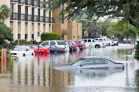

Welcome to the lesson on Introduction to Disaster Readiness, where we will explore the essential concepts and strategies to prepare for and mitigate the impact of disasters.
First, let's define the following terms:
Disaster - Are serious disruptions to the functioning of a community that exceed its capacity to cope using its own resources.
Hazard - A hazard is a dangerous phenomenon, substance, human activity or condition.
Vulnerability - A set of prevailing or consequential conditions, which adversely affect the community’s ability to prevent, mitigate, prepare for and respond to hazardous events (Asian Disaster Preparedness Center, 2006).
Risk - The combination of the probability of an event and its negative consequences (UNISDR, 2009).
What is Disaster Readiness?
Disaster readiness refers to the preparedness measures taken by individuals, communities, and organizations to mitigate the impact of disasters and emergencies.
Why is Disaster Readiness Important?
Disasters such as earthquakes, floods, hurricanes, and pandemics can have devastating effects on communities, leading to loss of life, property damage, and disruption of essential services. Being prepared for such events can help minimize their impact and save lives.
Classification of Disaster
Let us know how different disasters can have different effects on communities and people. Disaster can be divided into two large categories:
Natural and Man Made.
Natural Disaster
Natural forces including hurricanes, flames, tornadoes, typhoons, volcanic eruptions, earthquakes, and extremely high or low temperatures are what cause a natural phenomenon. They fall into two categories: disasters that happen quickly and disasters that happen gradually, such droughts that cause starvation. These often unexpected incidents can have far-reaching consequences.
Man Made Disaster
Disasters caused by man are those in which major direct causes are identifiable intentional or non-intentional human actions. This is subdivided into three categories
- Industrial Disasters
- Terrorism and Violence
- Complex Humanitarian Emergencies
Unregulated industrialization and inadequate safety standards increase the risk of industrial disasters, such as leaks of hazardous materials, explosions, collapses, and power cuts. The spread of technologies involving nuclear, biological, and chemical agents has also heightened the threat of terrorism and violence, including bombings, chemical or biological releases, and shootings. Complex humanitarian emergencies arise from conflicts or wars, leading to displacement, disrupted infrastructure, and limited access to assistance.
Disaster Risk
Disaster risk refers to the potential loss or harm that might occur due to a hazardous event. It's influenced by the type of hazard and the vulnerability of the community or system at risk. It's a complex and dynamic concept that can be reduced through hazard assessment, vulnerability analysis, risk mapping, early warning systems, and risk reduction measures. Effective disaster risk management requires a comprehensive understanding of various factors and their interactions. It's a broad field that involves many different disciplines.
Hazard is a potential source of harm, including human injury, property damage, and environmental damage, causing loss of life, health impacts, livelihoods, social disruption, or environmental damage. It is divided into two: Natural hazards and technological hazards. Natural hazards are natural phenomena that is caused by different factors such as geological, hydrological, climatological, meteorological, and biological factors. Meanwhile, technological hazards, also known as man-made hazards, are events that are caused by humans and occur in or close to human settlements.
are adverse conditions caused by internal earth processes like earthquakes, volcanic activity, and emissions, which can cause damage or loss of property or life when humans interfere.
are extreme events involving water movement and distribution, such as floods and droughts. These events result from complex physical processes and are sudden, violent events, like tsunamis, caused by changes in water quality or distribution. 
caused by long-lived atmospheric processes, include tropical cyclones, thunderstorms, tornadoes, drought, rain, hail, snow, lightning, fog, wind, temperature extremes, air pollution, and climatic change.

primarily related to temperature and wind, include extreme weather events such as heat waves, cold spells, hurricanes, tornadoes, droughts, and severe storms.
are pathogens that can be transmitted through various modes of exposure, such as epidemic diseases, plant or animal contagion, insect or animal plagues, and infestations, resulting in acute or chronic health conditions.

arise from industrial conditions, dangerous procedures, infrastructure failure, or human activity, including industrial pollution, nuclear radiation, toxic wastes, dam failures, transport accidents, factory explosions, fires, and chemical spills. Chemical, biological, radiological and nuclear (CBRN) hazards are all types of technological hazards.